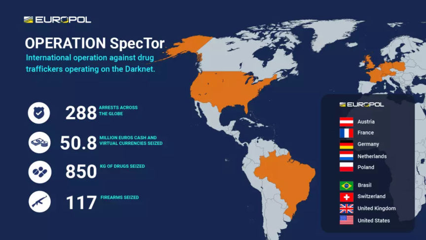
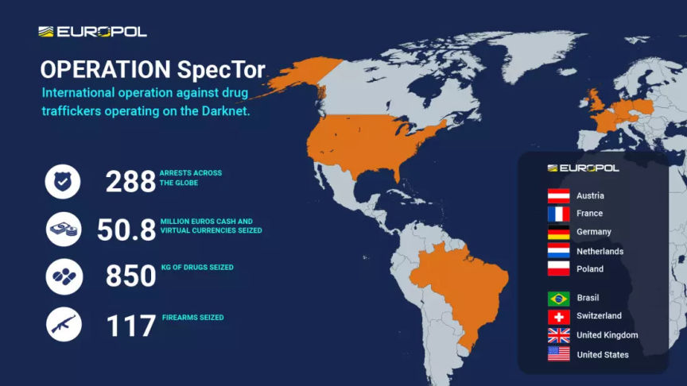

Operation SpecTor: Hundreds of Vendors Arrested
~2 min read | Published on 2023-05-04, tagged Arrested, Darkweb-Market, Darkweb-Vendor, Operations, Seized using 409 words.
An internationally coordinated operation dubbed Operation SpecTor resulted in the arrest of more than 200 suspected dark web marketplaces users worldwide.

According to the DoJ, in addition to the arrest of 288 suspected vendors and buyers, Operation SpecTor led to the seizure of 117 firearms, 850 kilograms of drugs, and $53.4 million in cash and cryptocurrencies.
As disclosed by German authorities in a joint press release by General Public Prosecutor's Office in Frankfurt am Main and the Central Criminal Inspectorate in Oldenburg, the operation was based on information acquired from the takeover of Monopoly Market by German authorities in collaboration with the FBI in December 2021.
The investigators seized the market's servers in Germany and Finland. From information acquired from the servers, the investigators established that the market had 403 vendors who had completed over 130,000 orders. Over 640 Bitcoin and 26,000 Monero had been exchanged in the completion of the drug sales.
German investigators collected evidence against the users of the market and shared it with Europol. The evidence was shared with international law enforcement agencies resulting in coordinated investigations in Austria, France, Germany, the Netherlands, Poland, Brazil, the United Kingdom, the United States, and Switzerland.
The operation resulted in the arrest of 228 suspected buyers and sellers of illicit goods on the dark web. The arrested suspects include 153 in the United States, 55 in the United Kingdom, 52 in Germany, 10 in the Netherlands, 9 in Austria, 5 in France, 2 in Switzerland, and 1 each in Poland and Brazil.
The 850 kilograms of drugs seized during the operation include 258 kilograms of amphetamine, 43 kilograms of cocaine, 43 kilograms of MDMA, 64 kilograms of fentanyl-laced drugs, and over 10 kilograms of LSD and ecstasy pills.
Operation SpecTor is the largest internationally coordinated operation against buyers and sellers of illicit goods through the dark web. It was preceded by operations DisrupTor in 2020 and Dark HunTor in 2021 with 179 and 150 arrests respectively.

According to the DoJ, in addition to the arrest of 288 suspected vendors and buyers, Operation SpecTor led to the seizure of 117 firearms, 850 kilograms of drugs, and $53.4 million in cash and cryptocurrencies.
As disclosed by German authorities in a joint press release by General Public Prosecutor's Office in Frankfurt am Main and the Central Criminal Inspectorate in Oldenburg, the operation was based on information acquired from the takeover of Monopoly Market by German authorities in collaboration with the FBI in December 2021.
The investigators seized the market's servers in Germany and Finland. From information acquired from the servers, the investigators established that the market had 403 vendors who had completed over 130,000 orders. Over 640 Bitcoin and 26,000 Monero had been exchanged in the completion of the drug sales.
German investigators collected evidence against the users of the market and shared it with Europol. The evidence was shared with international law enforcement agencies resulting in coordinated investigations in Austria, France, Germany, the Netherlands, Poland, Brazil, the United Kingdom, the United States, and Switzerland.
The operation resulted in the arrest of 228 suspected buyers and sellers of illicit goods on the dark web. The arrested suspects include 153 in the United States, 55 in the United Kingdom, 52 in Germany, 10 in the Netherlands, 9 in Austria, 5 in France, 2 in Switzerland, and 1 each in Poland and Brazil.
The 850 kilograms of drugs seized during the operation include 258 kilograms of amphetamine, 43 kilograms of cocaine, 43 kilograms of MDMA, 64 kilograms of fentanyl-laced drugs, and over 10 kilograms of LSD and ecstasy pills.
Quote:Attorney General Merrick B. Garland
Operation SpecTor was a coordinated international law enforcement effort, spanning three continents, to disrupt drug trafficking on the dark web and represents the most funds seized and the highest number of arrests in any coordinated international action led by the Justice Department against drug traffickers on the dark web. Our message to criminals on the dark web is this: You can try to hide in the furthest reaches of the internet, but the Justice Department will find you and hold you accountable for your crimes.
Operation SpecTor is the largest internationally coordinated operation against buyers and sellers of illicit goods through the dark web. It was preceded by operations DisrupTor in 2020 and Dark HunTor in 2021 with 179 and 150 arrests respectively.